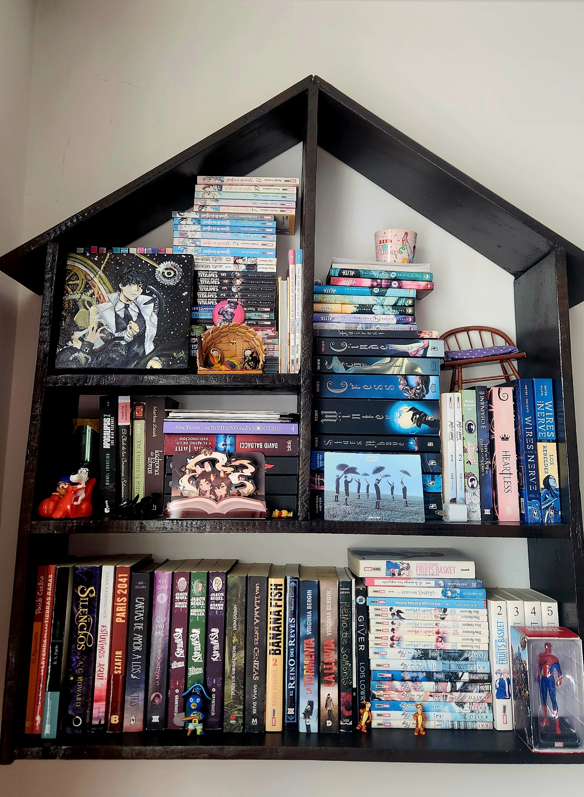

Bienvenidos a mi rincón lector
Me presento, soy Ixchel Sánchez y tengo 21 años.
Desde hace muchos años he sido lectora y ahora quiero compartir tantito de mis gustos a todos ustedes.
Este espacio es un lugar donde comparto mis recomendaciones mensuales de lectura.
Mis novelas favoritas son:
- El punto de vista del lector omnisciente
- La guerra de la amapola
- La bendición del oficial del cielo
Pd. Les adjunto una foto de mi librero.

Personajes principales
Kim Dokja | 김독자
Es el protagonista principal y el único lector de la novela web 3 maneras de sobrevivir al apocalipsis, novela que cobra realidad en la historia.
Fue una historia escrito solo para mí
Yu Junghyeok | 유중혁
Es el protagonista de la novela web 3 maneras de sobrevivir al apocalipsis. Es un regresor, lo que significa que cada vez que muere regresa al punto de partida, durante la novela está en su tercera regresión.
Rezaré para que tú también puedas seguir existiendo en algún lugar.
Han Suyeong | 한수영
Es miembro de la Compañía de Kim Dokja así como de una de sus mejores aliadas. Ella es la escritora de la novela Regresor infinito de grado SSSSS
Seguiré escribiendo el epílogo para ti hasta el fin de los tiempos, por toda la eternidad.